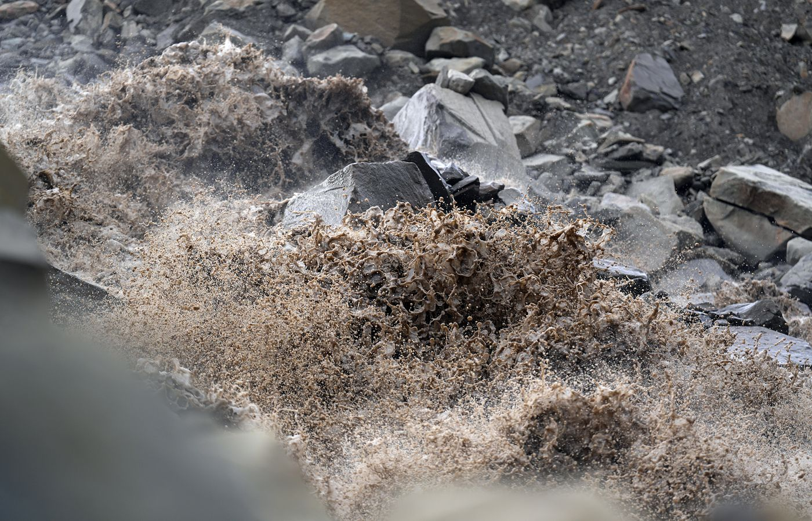

Glaciers
60 % de glace
Les glaciers couvrent plus de la moitié de l'archipel. Leurs fronts, qui se jettent dans la mer, sont des témoins directs du réchauffement.

Neuf étudiants du Collège du Sud en route vers le Svalbard, pour observer de leurs propres yeux un Arctique qui change.
01 — Le voyage
0 km parcourus vers le nord
Bulle — Le Collège du Sud, au pied des Préalpes
Un archipel norvégien à mi-chemin entre la Norvège et le pôle Nord, où le climat se réchauffe 6 à 7 fois plus vite que la moyenne mondiale.
Les glaciers couvrent plus de la moitié de l'archipel. Leurs fronts, qui se jettent dans la mer, sont des témoins directs du réchauffement.

Environ 3 000 ours polaires pour 2 900 habitants. C'est pour ça que les guides certifiés sont obligatoires dès qu'on sort des villages.
À Longyearbyen, le soleil ne se couche plus d'environ fin avril à fin août. Notre voyage d'été se fera en plein jour permanent.

Petit et trapu, il ne vit nulle part ailleurs.

Elle migre chaque année entre l'Arctique et l'Antarctique : le plus long voyage du monde animal.

Anciennes mines, épaves, déchets : l'être humain a laissé sa marque jusqu'au Grand Nord.
03 — Le projet
Nous sommes neuf étudiantes et étudiants du Collège du Sud, à Bulle, âgés de 16 à 18 ans. À l'été 2027, nous partirons deux semaines au Svalbard pour ramener bien plus que des souvenirs : des connaissances à partager.
Sur place, encadrés par une glaciologue et climatologue, une experte arctique et des guides certifiés, nous marcherons, bivouaquerons et documenterons ce que nous observerons : glaciers, faune, végétation, pollution, cartographie, images.
À notre retour, nous partagerons nos découvertes avec notre école et notre région, grâce à des expositions, des conférences et un film documentaire.
Ce projet, nous le construisons nous-mêmes depuis octobre 2025 : réunions, ventes de gâteaux, randonnées d'entraînement, recherche de soutiens.
Il ne manque plus que vous.
Soutenir le voyage
Deux semaines sur le terrainMarcher, bivouaquer,
observer, documenter.
04 — Sur le terrain
Chaque petit groupe prend en charge un thème, pour que le retour soit aussi riche que le voyage.

Traces, espèces observées, liens entre les animaux.
Nicolas · Fédor
Comment la vie survit dans un environnement extrême, et comment le terrain change d'un endroit à l'autre.
Melissa
Météo, températures, déchets et impact humain, avec la scientifique Célia Julia Sapart.
Chloé
Filmer le voyage, la vie en commun, et donner la parole aux gens rencontrés.
Salma · Amita
Cartographier chaque journée : tracé, distance, dénivelé, campements et observations clés.
Elise · Noah · ZoraPour faire voyager l'Arctique jusqu'en Gruyère.
05 — L'équipe
Neuf étudiantes et étudiants du Collège du Sud, à Bulle, âgés de 16 à 18 ans. Chacun porte un thème sur le terrain.
06 — L'encadrement
Artiste et passionné arctique, membre fondateur de l'association « Une Trace à Part ». Daniel a fait de nombreux voyages au Svalbard pour réaliser les tomes 1 et 2 du livre « Dans la trace des ours blancs ».
Elle vit au Svalbard depuis 30 ans. Ambassadrice polaire et scientifique, elle est un témoin exceptionnel de la transformation climatique de l'Arctique, et nous accompagnera dans nos découvertes en partageant ses expériences engagées sur le terrain.
Guide certifié au Svalbard, où il vit depuis 2010. Marcel est responsable de la sécurité et de toute la logistique : alimentation, matériel de camping, transports en bateau et en voiture.
Chercheuse suisse, spécialiste des gaz à effet de serre, notamment du méthane. Célia nous accompagnera dans nos réflexions sur le climat et la pollution, vers une meilleure compréhension de ces mécanismes complexes.
Professeur de géographie et de sport au Collège du Sud, à Bulle.
07 — Le Svalbard en images



« L'Arctique mobilise souvent le meilleur de nous-même. »
Photos © Daniel Rohrbasser — artaventure.ch
08 — Ils nous soutiennent
« C'est exceptionnel que des adolescents, soutenus par leurs parents, mettent en commun leur passion pour la nature et s'organisent pour aller visiter le Grand Nord et y étudier de façon scientifique les différents thèmes qu'une telle démarche fait émerger. »
« Je suis impressionné par l'énergie et l'enthousiasme des jeunes du Collège du Sud. Leur curiosité et leur engagement sont une source d'inspiration : ces jeunes nous montrent la voie. »
« L'Arctique mobilise souvent le meilleur de nous-même. C'est une école de Vie unique et inspirante pour des personnes attentives aux événements climatiques et environnementaux. »
09 — Nous soutenir
Notre objectif : CHF 40'000. Ce montant couvre le voyage jusqu'à Longyearbyen, les guides certifiés (obligatoires au Svalbard), l'hébergement et le matériel de sécurité pour neuf étudiants et leurs accompagnants. Nous finançons déjà une partie du projet nous-mêmes : ventes diverses, petits travaux et économies personnelles.
Par virement bancaire ou par TWINT. Chaque franc compte, quel que soit le montant.
Je fais un donNous vendons quelques exemplaires du livre de Daniel Rohrbasser au profit de notre voyage d'étude.
Commander un exemplaireIndiquez-nous votre don en quelques secondes : nous pourrons vous remercier personnellement et vous tenir au courant du voyage. Vous recevrez ensuite les coordonnées de paiement.